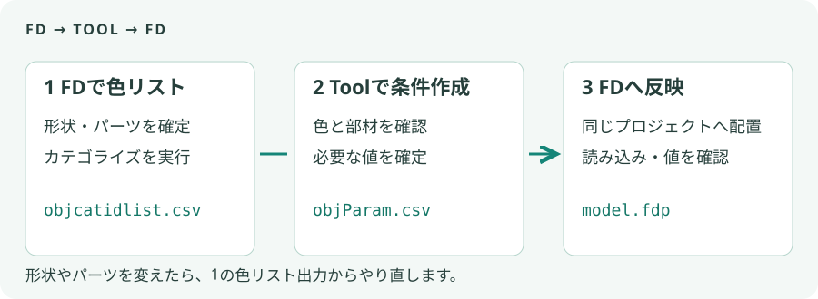
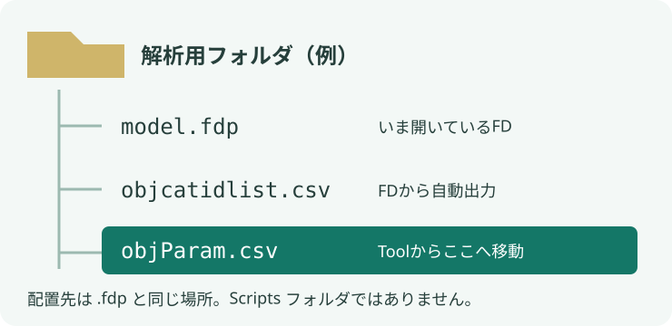
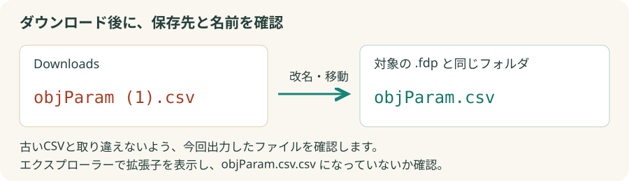

CFD BOUNDARY TOOL / FLOWDESIGNER
条件CSVを、正しいFDへ渡す
objParam.csv を、いま開いている .fdp と同じフォルダへ。
ダウンロードしただけでは、FDから読み込めません。
1. 形状を確定し、色リストを出力

- 対象のFDを開く：プロジェクトを保存し、3DS・エアコン・開口などの配置を終えます。複数のFDを開いている場合は対象を一つに絞ります。
- 色リストを出す：「【SSL】オブジェクトIDカテゴライズcsv出力.vbs」を実行します。
objcatidlist.csvはプロジェクトと同じフォルダへ出ます。 - Toolで選ぶ：「色リストの読み込み」で、今回出力したCSVを選びます。色と部材の割当、材質名、必要な数値、流量単位を確認します。
形状を変更したり、パーツを追加・削除したら、色リストをもう一度出力してください。別プロジェクトでも同じIDが使われることがあるため、IDの一致だけでは同じ建物と確認できません。
2. 条件CSVを配置

- 条件を出力：Toolで「objParam.csv を書き出す」を押します。未割当や必須値のエラーがあるときは、表示された箇所を直します。
- 保存先へ移動：ダウンロードされたファイルを、対象の
.fdpがあるフォルダへ移動します。Scriptsフォルダではありません。 - 名前を確認：固定名は
objParam.csvです。古いファイルと取り違えないよう、今回出力したものを確認して置き換えます。

2つのCSVはルールが違います。色リストはファイル選択で読むので、objcatidlist (1).csv という名前や別の保存場所でも使えます。FDが固定名で探す条件CSVは objParam.csv です。エクスプローラーで拡張子を表示し、objParam.csv.csv になっていないことも確認してください。
3. FDへ読み込み、代表値を確認
- 読み込む：「【SSL】自動化_objParamCSV読み込み.vbs」を実行します。新しい単位情報に対応したスクリプトへ更新してください。
- 旧CSVの単位を確認：単位情報がないCSVで質問された場合は、出力時のCMH（m³/h）またはCMM（m³/min）を選びます。不明ならキャンセルしてToolから再出力します。
- 代表値を照合：外壁・窓・内部発熱・開口・空調を各1件選び、オブジェクト種別、材質、温度、発熱、開口率、流量、優先度をToolの値と照合します。
- 解析へ進む：解析領域・メッシュ・空調や換気の位置を確認して実行します。
止まったときの直し方
- ファイルがない：表示されたプロジェクトフォルダ、固定名、拡張子を確認します。スクリプトは
(1)付きファイルを自動選択しません。 - IDがない・CSVが不正：対象FDから色リストを再出力し、Toolで読み直して条件CSVを作り直します。
- 途中で反映に失敗：そのまま解析せず、エラー対象を確認します。反映前に保存したプロジェクトを開き直して、条件を修正してから再実行してください。途中の変更が自動で戻る保証はありません。
このガイドの名称と図はすべて説明用の架空例です。